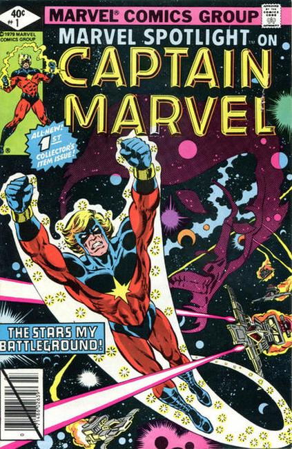

An umbrella title that gave an opportunity for lesser known characters a chance to see if they could have their own title. The title was mildly successful, ran for 6 years and put out 33 issues, but took a vacation in 1978 for some reason and came back in 1979 for 11 more issues.
1971 series issue #1: Red Wolf origin (first appearance is in Avengers 80) in "Red Wolf." Script by Gardner Fox, pencils by Syd Shores, inks by Wally Wood. Neal Adams cover.

1979 series issue #1: Return to Titan: part 1 of 2 - "The Saturn Storm!" Guest-starring Drax the Destroyer. Starfox cameo. Written by Doug Moench. Art by Pat Broderick and Bruce Patterson. Cover by J. Aclin and Bob McLeod.
MAR-VELL - an alien warrior of the ancient Kree race with powers given him as Protector of the Universe, he seeks to defend Earth, the planet he has made his own! Picking up after the events of Captain Marvel (1968-1979 1st Series Marvel) #62, Mar-Vell, Rick Jones, Gertie and Drax the Destroyer head to the Saturn moon of Titan and comer under siege. What power in the galaxy could have possibly humbled the Eternals of Titan? The answer may prove to be the good Captain's end.